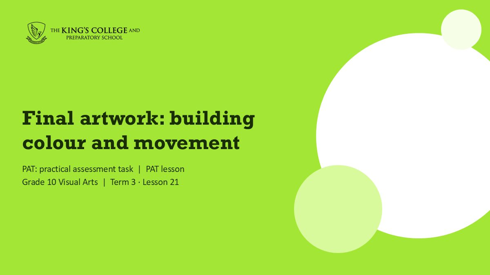

Term 3 · Lesson 21 · PAT lesson
Exam Plan: Final Composition and Media
Start Here
Today I Will
- Build colour in layers over my first washes
- Strengthen the path of movement with colour and edges
- Check that my meaning reads clearly
Think first
If you followed your artwork with your finger the way your eye moves, where would your finger go?
Words to Know
| Word | Meaning |
|---|---|
| Layering | Building colour in several light layers. |
| Edge control | Choosing where edges are sharp and where they are soft. |
| Path of movement | The route the viewer's eye follows through the artwork. |
| Colour temperature | How warm or cool a colour feels. |
| Resolved | Finished, with every part working towards the meaning. |
Slides

Notes
Demonstration: building colour pencil over washes in layers; planning the exam artwork: final composition, path of movement and the media test on part of the figure.
Building the Colour
- Big colour first: Lay the main colour areas lightly over the dry washes.
- Shadows cool, lights warm: Build form with colour temperature.
- Darks: Add the darkest accents only where they help the movement or the focal point.
- Highlights: Keep or add the brightest lights last.
Leading the Eye
- Sharp edges: On the leading edge of the movement and at the focal point.
- Soft edges: On the trailing edge, to suggest speed.
- Direction: Strokes that follow the movement.
- Colour: The strongest colour at the focal point.
Remember
Lead the eye, and the body will move.
Practical
You need: Final artwork, colour pencils, wash media, brushes
Final Artwork: Building Colour and Movement
- Read your intention again and keep it beside your work.
- Build the main colour layers over your dry washes.
- Use cool colours in the shadows and warm colours in the light.
- Sharpen the leading edges and soften the trailing ones.
- Trace the path of the eye and adjust one thing to make it clearer.
- Photograph your progress and note today's decisions in your VJ.
Test Yourself
- Where should edges be sharp in a moving figure?
- What is the path of movement?
- Why read your intention again?
Show answers
1. On the leading edge of the movement and at the focal point. 2. The route the viewer's eye follows through the artwork. 3. To make sure every choice still supports the meaning.
Finished Early?
Edge test
Sharp leads, soft trails.
- Draw a small running figure twice.
- In one, keep all edges sharp.
- In the other, soften the trailing edges.
- Which looks faster? Why?